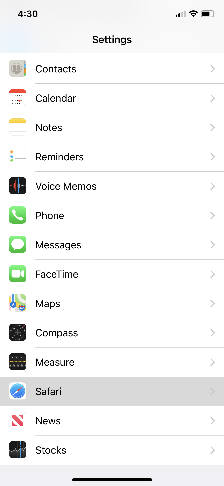
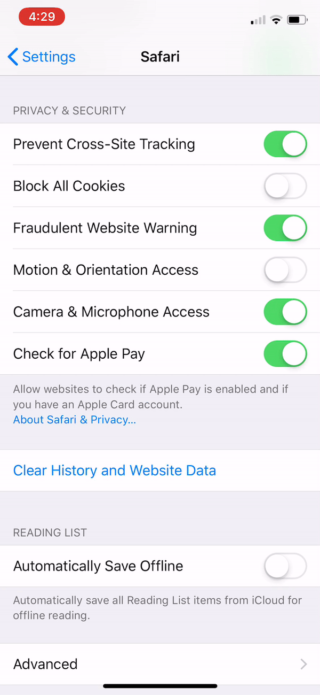

Motion Access
Is the background of chromapose.me black?
Enable motion and orientation access on your phone.
If you're using Safari on iOS, try using Chrome or Firefox instead.
If not, go to Settings and scroll down to Safari.

Under Privacy & Security, enable Motion & Orientation Access.

Now reload chromapose.me. Make sure the background changes colors when you move!